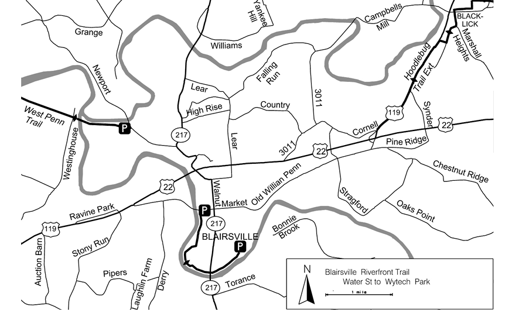

Blairsville trail is tucked into a loop of the Conemaugh River in the upper reaches of Conemaugh Lake, a Corps of Engineers flood control project. When the lake is being used to hold back flood waters and prevent downstream towns from flooding, this trail may be under water. The rest of the year it offers a pleasant riverside excursion.
| Location | Blairsville, Indiana County | ||
| Trailheads | Blairsville | ||
| Length, Surface | 1.7 miles chip seal | ||
| Character | Uncrowded, shady, wooded, flat with one 300-foot 8% grade | ||
| Usage restrictions | No motorized vehicles, no horses | ||
| Amenities | In town | ||
| Driving time from Pittsburgh | 0 hours 55 minutes |
The trail itself is 10 feet wide, surfaced in chip seal to resist flooding. For the most part, the trail runs in a park-like setting with plenty of shade trees and a grassy berm.
The trail starts at a small parking area a block south of Market St. It immediately drops 25 feet to river level at an 8% grade for 300 feet. From the bottom of this hill, the trail winds along the flood plain and around a ball field (MP0.5) for a mile. At mile MP1.2, under the SR217 bridge, note the red waterfall across the river. It is coming from a coal seam that supplied a major glass factory, that once sat in the floodplain on the left of the trail. Coal for the glass furnaces crossed the river via an aerial tramway. From here the trail straightens out a bit before it ends at the parking area near the abutments and piers for the former Cokeville Bridge in Wyotech Park. This bridge/road was the main road into and out of town until the new bridge on Walnut St was built. This parking area also serves as a canoe/kayak launch site.
At normal summer water level in the reservoir, the stream is well contained in its banks and the trail is dry. However, during periods of heavy rain the Conemaugh Lake holds back water to reduce flooding downstream, releasing the water after the high-water levels have fallen on the Kiskiminetas and Allegheny Rivers. During these periods, the lake level may rise by as much as 75 feet—which would put the entire trail under water. Fortunately, this does not happen very often. Normal lake level is 900–905 feet above sea level. The trail elevation here is about 940 feet. At least once a year the water reaches this elevation, covering portions of the trail. The high water tends to be in late winter and early spring, but the lake level can come up at any time after heavy widespread rain. If planning to visit the trail during or soon after a rainy period or during spring thaw, check on the lake status. For a daily report and 3-day forecast of lake levels look online at:
https://water.noaa.gov/gauges/CNMP1#v=official

Blairsville RIverfront Trail - Oldest segment segment check 2026-Jul This page brought to you by the book